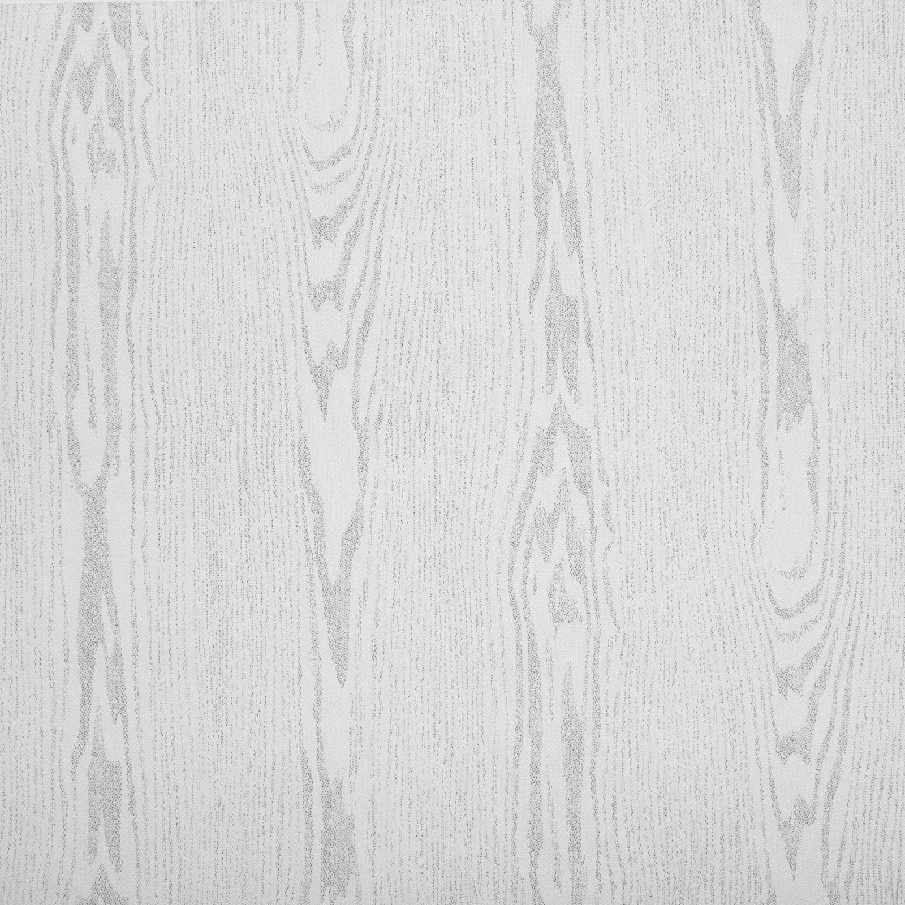
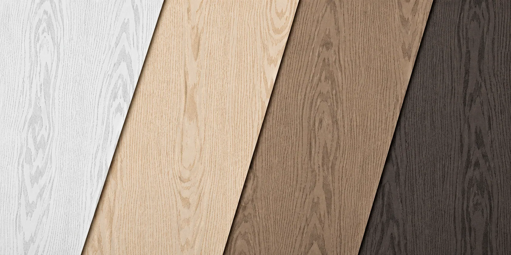
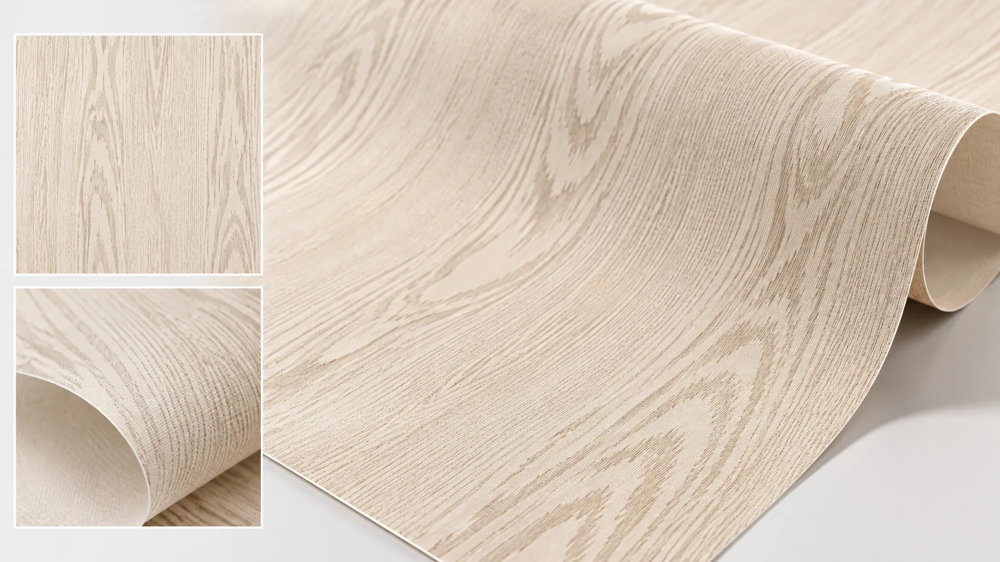
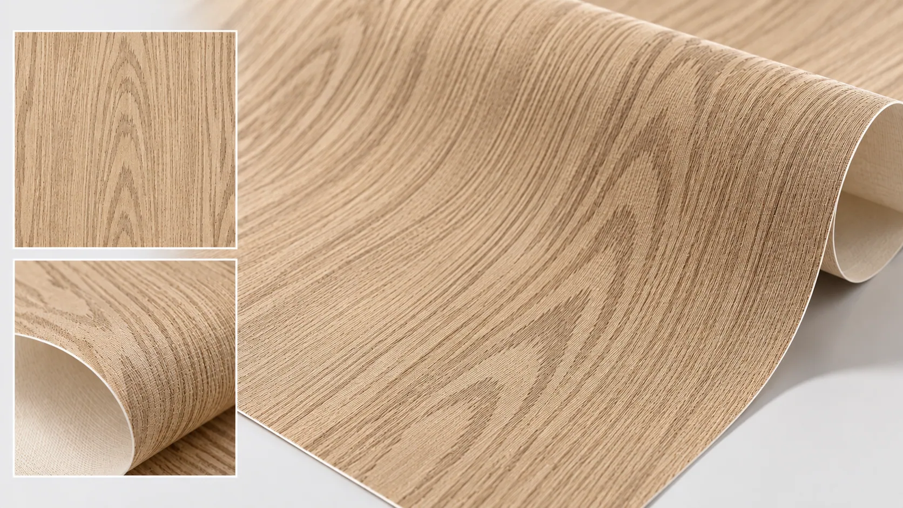
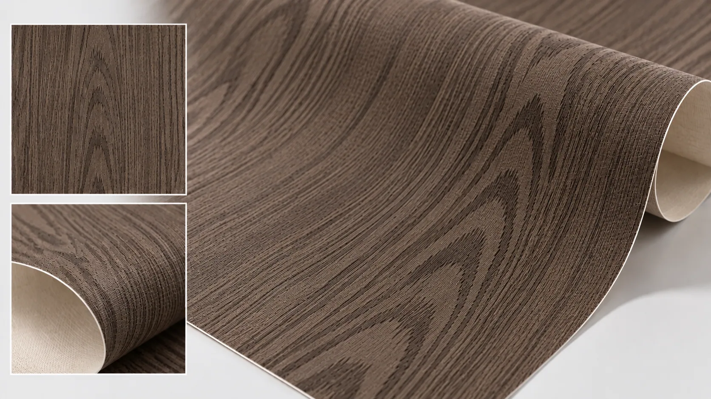
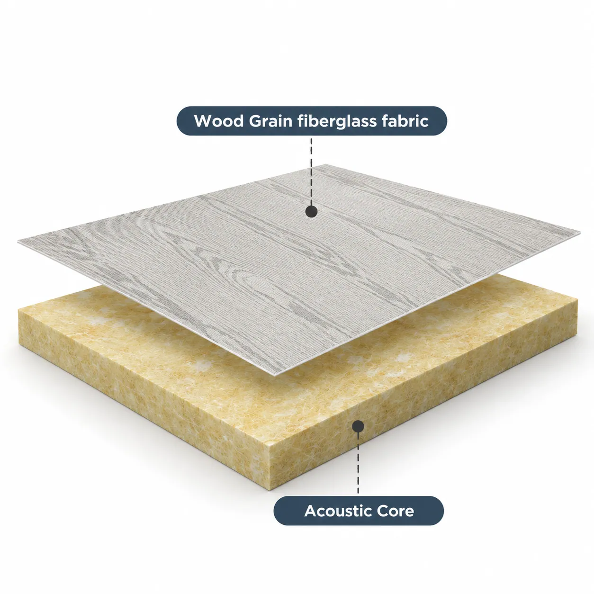
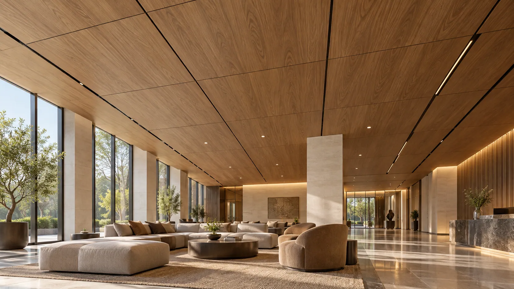
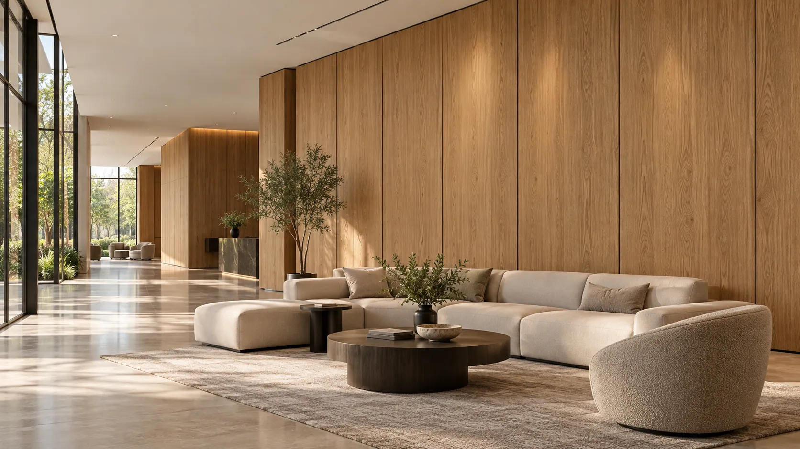
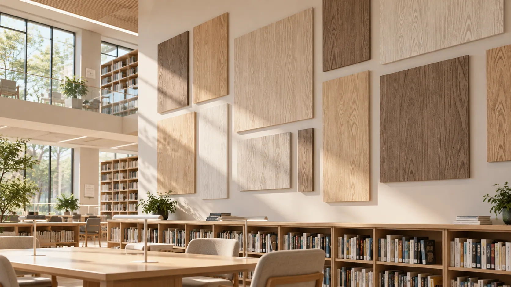

Grain reproduction
Flat or poorly defined patterns can lose the visual character expected from a wood-inspired surface.
DECORATIVE ACOUSTIC FABRIC SOLUTIONS
Natural Wood Aesthetics. Woven for Acoustic Spaces.
A woven fiberglass facing with a wood-inspired finish for acoustic ceiling and wall panels. Select the pattern and fabric for your core, design and manufacturing process.

NATURAL APPEARANCE MATTERS
Large acoustic ceilings and walls can reveal differences in decorative pattern and fabric appearance.
Flat or poorly defined patterns can lose the visual character expected from a wood-inspired surface.
Uncontrolled color variation may become visible across adjoining panels.
Grain direction and placement influence the visual flow of a ceiling or wall installation.
Decorative treatments can change fabric airflow resistance, so select them for the finished panel's sound absorption requirements.

DESIGNED FOR DECORATIVE FREEDOM
The decorative treatment supplies the wood appearance; woven fiberglass provides the fabric structure.
Selected grain details and coordinated tones reproduce the visual character of timber.
The woven structure adds a fabric texture beneath the decorative treatment.
Evaluate fabric construction and surface treatment for the airflow requirements of your acoustic panel design.
The fiberglass base supports handling, cutting, lamination and conversion during panel production.
NATURAL TEXTURES. MORE DESIGN POSSIBILITIES.
Compare color, grain and textile texture using samples. Availability depends on product grade and manufacturing feasibility.

Soft tones and subtle grain for bright offices, classrooms, libraries and contemporary acoustic ceilings.

Balanced wood tones and grain detail for meeting rooms, restaurants, commercial interiors and acoustic wall panels.

Deeper tones and stronger contrast for hotels, auditoriums, theaters and feature walls.
Coordinate the selected pattern with the panel layout and evaluate appearance under representative lighting conditions.
HOW IT WORKS
The decorative fabric is the visible facing layer. The mineral wool or glass wool core supplies the primary sound-absorbing structure.

A woven textile with a decorative wood-inspired finish combines grain appearance and surface texture.
Mineral wool or glass wool forms the main sound-absorbing structure of the finished ceiling or wall panel.
The decorative fabric and acoustic core should be evaluated as a complete panel system to confirm bonding compatibility, appearance, airflow resistance, and sound absorption performance.
TECHNICAL INFORMATION
Confirm the weave, decorative treatment and material grade for the chosen panel design. Permeability depends on both weave and treatment.
| Parameter | Specification |
|---|---|
| Product | Wood Grain Acoustic Fiberglass Fabric |
| Base Material | Woven Fiberglass Fabric |
| Surface Treatment | Decorative Wood Grain Finish |
| Color | Customizable Wood-Inspired Colors |
| Pattern | Customizable Wood Grain Designs |
| Surface Appearance | Wood-Look Textile Texture |
| Weave Structure | Grade-Dependent |
| Basis Weight | Grade-Dependent / Customizable |
| Thickness | Grade-Dependent |
| Roll Width | Customizable |
| Air Permeability | Weave & Treatment-Dependent |
| Dimensional Stability | Fiberglass-Based Structure |
| Compatible Core | Mineral Wool / Glass Wool |
| Supply Form | Rolls |
| Customization | Color, Pattern, Width, Weight & Surface Properties |
Technical specifications, available wood grain patterns, surface treatments, tolerances, and test results vary by product grade. Contact GRECHO to confirm available designs and request detailed technical documentation.
APPLICATIONS
Evaluate the facing with suitable mineral wool or glass wool cores.

A wood-inspired woven surface for coordinated ceiling designs, with the facing selected around the panel's acoustic requirements.

Decorative fabric-faced panels combine sound-absorbing cores with coordinated wood tones, texture and patterns.

A natural-looking decorative option for meeting rooms, classrooms and libraries requiring acoustic wall or ceiling treatments.
FROM SAMPLE TO PRODUCTION
Check decorative quality as well as compatibility with the intended core and production process.
Share the core, dimensions, preferred grain appearance and technical requirements.
Compare colors, grain detail, woven texture and visual consistency under representative lighting.
Test the fabric with your core, adhesive, lamination process and cutting equipment.
Agree the pattern, fabric grade, roll dimensions, surface treatment and technical requirements.
FAQ
This product uses woven fiberglass fabric. Wood Grain Fiberglass Coated Veil uses a nonwoven veil. Texture, mechanical behavior, airflow resistance and processing requirements may differ.
It may. Decorative coating, weave and airflow resistance can influence the finished panel. Evaluate the fabric with the sound-absorbing core.
These depend on the selected finish and coating formulation. Confirm them through product-specific testing before making performance claims.
LET'S FIND YOUR SOLUTION
Discuss decorative samples and a fabric grade for your design, acoustic core and production process.